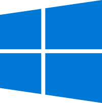
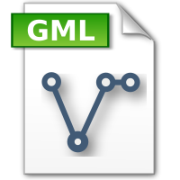
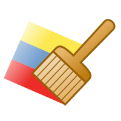

Praktisk startkurs i QGIS
Praktisk startkurs i QGIS
Dette er en enkel ressursside for Praktisk startkurs i QGIS.
 Informasjon om Praktisk startkurs i QGIS (.pdf)
Informasjon om Praktisk startkurs i QGIS (.pdf)
QGIS er et vederlagsfritt program for behandlig av geografisk informasjon.
Programmet kan enkelt installers på egen laptop og brukest til ethvert formål etter GPLv2-lisensen.
Det forutsettes at deltakerne har egen laptop med programmet installert, for å bruke minst mulig tid på installasjon i løpet av kurset.
Det er også anbefalt å ha med egen datamus.

Installasjon for for Windows 10:
- Gå til www.qgis.com.
- Trykk "Download Now.
- Under den store nedlastingsknappen står det: "Looking for the most stable version?". Trykk der for å få den gjeldende LTR-versjonen..
- OBS: 32-bit systemer er ikke lenger støttet for de nyere versjonene av QGIS. Dersom du fortsatt bruker en 32-bit PC, må du installere versjon eldre enn QGIS 3.20.
- Kjør .exe-filen og installer programmet.
- For å åpne QGIS, trykk "QGIS Desktop" eller "QGIS skrivebordprogrammet" på norsk.
- OBS: Installasjonsfilene er veldig stor og QGIS-serveren er ikke veldig rask. Det er lurt å laste ned denne filen før kursstart.
- OBS: Dersom du bruker en jobbpc, kan det være at den IT-ansvarlige har installert programvare som nekter deg å installere QGIS.
-
Installasjon for Debian 10 Bullseye (GNU/Linux):
- OBS: Den nyeste versjonen er oftest ikke tilgjengelige i de offesielle tilbyderene fra opertivsystemene.
- Følg veilederen og bruk tilbyderen "https://qgis.org/debian buster main".
- Det er også mulig å kompilere en egen versjon av QGIS fra kildekoden på github. OBS: Dette gir den aller nyeste versjonen, men dette fører erfaringsmessig til en ustabil opplevelse av QGIS.
Installasjon for MacOS:

Datasett:
- Last ned datasett AR50-datasettet over Oslo.
- Velg .gml-format og sett projeksjonen til EUREF89 UTM sone 32.
- Last ned
- Pakk ut .zip-fila
- Dra .gml-filen inn i QGIS
- Velg "ArealressursFlate" og trykk "OK"
- Dokumentasjon og er tilgjengelig på NIBIO sine hjemmesider
- Tegneregler er tilgjengelige på geonorge.no

Stiler:
- Trykk her for å laste ned bonitetstilen
- Pakk ut .zip-fila, filen skal være i .sld-format.
- Gå til Symbologi-menyen () i Lagegenskapene.
- Trykk "Stil" og velg "Last stil...".
- Last inn .sld-filen og trykk "OK"
- Kartet vil nå være regelstyrt farglagt ().
WMS-tjeneste:
- Høyreklikk på jordkloden i Browseren til venstre i QGIS og velg "Ny forbindelse".
- Navn: "Toporaster 4". (valgfritt navn, men navn er obligatorisk)
- URL: http://openwms.statkart.no/skwms1/wms.toporaster4?version=1.3.0&service=wms&request=getcapabilities
- Trykk "OK"
- Det er nå en liste under jordklodesymbolet: Ekspander listen ved å trykke på den svarte pilen () til venstre for kloden ().
- Dobbeltklikk på objektene som dukker opp under helt til WMS-tjenesten blir lagt til som et lag i lagvinduet.
- OBS: Linken som står i klartekst over er ikke en tradisjonell nettadresse. I nettleseren vil kun vise den som en XML-tabell.
| Tlf.: |
+47 977 22 320 |
| E-post: |
anders.konnestad@nmbu.no |
| Org.nr.: |
922 612 072 |

Denne siden er driftet av Konnestad Consulting
© Anders Johan Konnestad